Sources, FAQ & Legal notice
Back to the main page
Detailed Sources | Frequently asked questions | Donations | Contact and Legal notice
This work is licensed under CC BY-NC-SA 4.0


Icons from Lucide, under the ISC License
Hosted by the amazing mia
Sourcecode on Codeberg: Neomojimixer
API documentation
Detailed Sources
Neomojis are from the following sources:
- Neofox 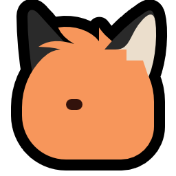 by Volpeon
- Neocat
 by Volpeon
by Volpeon - Mastodon't
 by Volpeon
by Volpeon
(Redrawn by mia) - Neorat
 by Justje
by Justje - Neopossum
 by EeveeEuphoria
by EeveeEuphoria - Neobread
 by olivvybee
by olivvybee - Blobbee 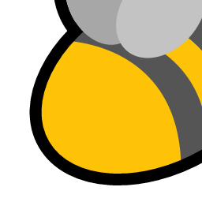 by olivvybee
- NeoDLR 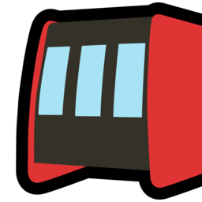 by olivvybee
- NeoSSB
 by olivvybee
by olivvybee - Zipper 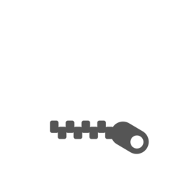 by olivvybee
- Neoyas 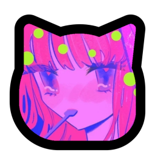 by Kuriko
- Neofox_aroace
 by asahi
by asahi - Neocat_plural_median 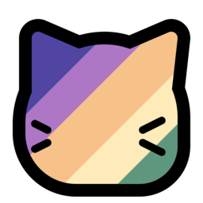 by Ielenia
- Neofox_plural_median
 by Ielenia
by Ielenia - Neodog
 by Moonrabbits
by Moonrabbits - Neomouse
 by Wep
by Wep - Neobot
 by Jen with contributions by James
by Jen with contributions by James - Hyvis 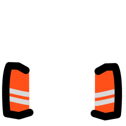 by Vavency
- Neoradish
 by ridiche
by ridiche - Bottle
 by ridiche
by ridiche - Bottle Big
 by ridiche
by ridiche - Neogob
 by PrimaveraZY adapted by James
by PrimaveraZY adapted by James - Neocatraxx
 by James
by James - Neocircle
 by James
by James - Neomelody 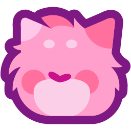 by James
- Hold_neocat
 by James
by James - Arms_vulcan by James
- Crown_dutch from Wikipedia adapted by James
- mouth_mustache_blep 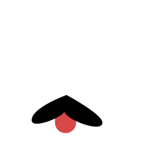 by mira adapted by James
- arms_wrench by James inspired by neowrench v2 by Slime.
- mouth_nom_wrench by James using the wrench mad by Vel.
- Eyes_neocat_glasses by James
- Monday face
 by Niac
by Niac
(Based of "It's a Monday" by LOLNEIN) - Neoredpanda
 by Ente
by Ente - Neobear 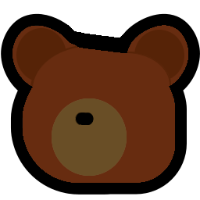 by Ente
- Neodino 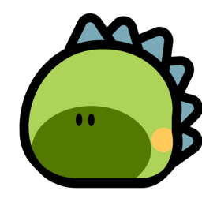 by Ente
- Neohaj
 by Ente
by Ente - Neotrain 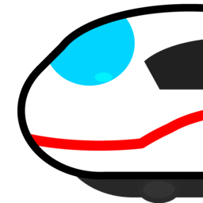 by Ente
- Neowyvern
 by Ente
by Ente - Neomilk
 by Ente
by Ente - Neocow
 by Ente
by Ente - Neootter
 by Ente
by Ente - Neosheep
 by Ente
by Ente - Neopig by Ente
- Neowolf
 by Ente
by Ente - Neobattery
 by Ente
by Ente - Neomug 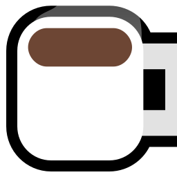 by James based on this post
- Neotoiletroll
 by olivvybee adapted for the mixer by James
by olivvybee adapted for the mixer by James - Neoarcticfox by BlahajBlast
Frequently asked questions
What is the neomojimixer?
The neomojimixer is a little toy to mix up the well known and very popular emojis who are drawn in a neomoji style. The first to appear were the neofoxes and neocats by Volpeon in 2023 (source above), and since then many derivatives have been released by many different people.It was always part of the fun to create new variants of existing neomojis, but it considered quite some time and the usage of not always that easy to use software. To speed up the process and make it much easier for everyone to create new variants, this project was started.
Did all of the authors agree to this?
Yes, they are! Even though all of them are provided under a Creative Commons licence, which would have allowed me to use them with attribution to the original artists, I asked each of them if they agreed with the use of their work in the neomojimixer.The part looks wonky and doesn't align properly? And the original looks way better.
There are some technical limitations the neomojimixer faces. And this is a toy, not a professional tool to create emojis. Wonkiness is part of the fun and it was never the goal to be as good as the orignals. Feel free to contribute to the repository if you know how to fix things that annoy you.Can you add parts?
Maybe. Like I said, there are some limitations to work with. Just ask me and maybe I can add more parts!I made this new neomoji. How to add it to the neomojimixer?
Just ask me. I can add it and publish it. If you want to make my life very easy and you know how, just make a pull request in the Codeberg repository. All the files are just 256px x 256px PNGs and they are referenced in the parts.json with the colour of the arms. So if you can do that, I can publish it a lot faster. If not, I am happy to add more parts myself!I want function A and B and C!
I welcome any help, whether it be for an upcoming API, ways to add more neomojis, or anything else. Feel free to contribute!Donations
Thank you for considering a donation. The running cost of this project is very low therefore no donations are necessary. But how about donating to one of the following NGOs?- UNICEF - Agency of the United Nations responsible for providing humanitarian and developmental aid to children worldwide.
- UNHCR - United Nations agency mandated to aid and protect refugees, forcibly displaced communities, and stateless people, and to assist in their voluntary repatriation, local integration or resettlement to a third country.
- Médecins Sans Frontières - Charity that provides humanitarian medical care.
- Your local animal shelter - Almost every shelter is run by donations and volunteers. Why not use a search engine of your choice to find your local shelter and donate to them?
Contact and Legal notice
Operator of neomojimixer.com: Robert "Ente" KeimContact Information:
Ente at the Fediverse (@Erpel@hai.z0ne.social)
Email neomojimixer@fotoente.com
This website is operated from Germany and is subject to German and European Union law. All parts of this website are licensed under CC-BY-NC-SA 4.0. The full address will not be published as there are no commercial or financial interests in the operation of this website.
If you have any questions, please contact me at the email address above!